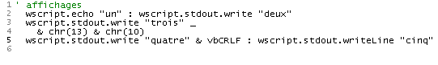
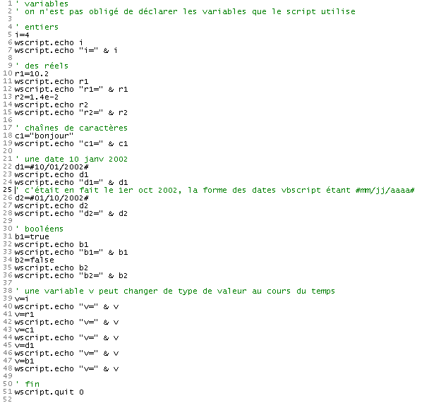
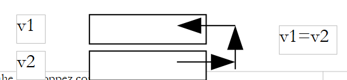
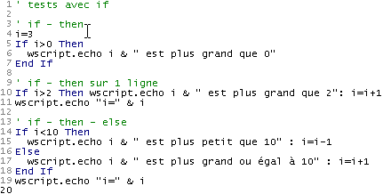
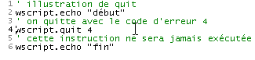

3. Grundlagen der Programmierung VBSCRIPT
Nachdem wir die möglichen Ausführungskontexte für ein VBScript beschrieben haben, wenden wir uns nun der Sprache selbst zu. Im weiteren Verlauf gehen wir von folgenden Bedingungen aus:
- Der Container des Skripts ist WSH
- Das Skript befindet sich in einer Datei mit der Endung .vbs
Um ein Konzept vorzustellen, gehen wir in der Regel wie folgt vor:
- Wir stellen das Konzept bei Bedarf vor
- wir stellen ein Beispielprogramm mit seinen Ergebnissen vor
- bei Bedarf werden die Ergebnisse und das Programm erläutert
VBScript-Befehle unterscheiden nicht zwischen Groß- und Kleinschreibung im Skripttext. Daher kann man sowohl wscript.echo „Hallo“ als auch WSCRIPT.ECHO „Hallo“ schreiben.
Die im Folgenden vorgestellten Programme führen zahlreiche Bildschirmausgaben durch, daher werden wir die Schreibmethoden des WScript-Objekts noch einmal erläutern.
3.1. Informationen anzeigen
Wir haben bereits die Methode echo des Objekts wscript verwendet, doch dieses Objekt verfügt über weitere Methoden zum Schreiben auf den Bildschirm, wie das folgende Skript zeigt:
Programm | Ergebnisse |
 |
Beachten Sie bitte Folgendes:
- Jeder Text, der nach einem Apostroph steht, wird als Kommentar des Skripts betrachtet und von WSH (Zeile 1) nicht interpretiert.
- Die Methode echo schreibt ihre Argumente aus und springt zur nächsten Zeile, ebenso wie die Methode writeLine (Zeilen 2 und 6).
- Die Methode write schreibt ihre Argumente und springt nicht zur nächsten Zeile (Zeile 3).
- Ein Zeilenende wird durch die Folge der beiden Codezeichen 13 und 10 der Methode ASCII dargestellt. Somit wird Zeile 4 durch den Ausdruck chr(13) & chr(10) dargestellt, wobei chr(i) das Codezeichen ASCII i und & der Zeichenfolgenverkettungsoperator ist. So ergibt „chat“ & „eau“ die Zeichenfolge „chateau“.
- Das Zeilenendezeichen lässt sich einfacher durch die Konstante vbCRLF (Zeile 5) darstellen
3.2. E s Schreibens von Anweisungen in einem VBScript-Skript
Standardmäßig wird eine Anweisung pro Zeile geschrieben. Es ist jedoch möglich, mehrere Anweisungen pro Zeile zu schreiben, indem man sie durch das Zeichen trennt: wie in inst1:inst2:inst3. Ist eine Zeile zu lang, kann man sie in Teile aufteilen. Dabei müssen die einzelnen Teile der Anweisung jeweils mit den beiden Zeichen (Leerzeichen)_ enden. Wir greifen das vorherige Beispiel wieder auf und schreiben die Anweisungen anders um:
Programm | Ergebnisse |
 |
3.3. Schreiben mit der Funktion msgBox
Auch wenn wir in diesem Dokument fast ausschließlich das Objekt wscript zum Schreiben auf dem Bildschirm verwenden, gibt es eine ausgefeiltere Funktion, um Informationen in einem Fenster anzuzeigen. Es handelt sich um die Funktion msgbox, die in der Regel mit drei Parametern verwendet wird:
msgbox Nachricht, Symbole+Schaltflächen, Titel
- message ist der Text der anzuzeigenden Meldung
- „Symbole+Schaltflächen“ (optional) ist eigentlich eine Zahl, die den Typ des Symbols und die im Meldungsfenster anzuzeigenden Schaltflächen angibt. Diese Zahl ist meist die Summe aus zwei Zahlen: Die erste bestimmt das Symbol, die zweite die Schaltflächen
- „Titel“ ist der Text, der in die Titelleiste des Meldungsfensters eingefügt werden soll
Die folgenden Werte können verwendet werden, um das Symbol und die Schaltflächen des Anzeigefensters festzulegen:
Konstante | Wert | Beschreibung |
vbOKOnly | 0 | Zeigt nur die Schaltfläche „OK“ an. |
vbOKCancel | 1 | Zeigt die Schaltflächen „OK“ und „Abbrechen“ an. |
vbAbortRetryIgnore | 2 | Zeigt die Schaltflächen „Abbrechen“, „Erneut versuchen“ und „Ignorieren“ an. |
vbYesNoCancel | 3 | Zeigt die Schaltflächen „Ja“, „Nein“ und „Abbrechen“ an. |
vbYesNo | 4 | Zeigt die Schaltflächen „Ja“ und „Nein“ an. |
vbRetryCancel | 5 | Zeigt die Schaltflächen „Erneut versuchen“ und „Abbrechen“ an. |
vbCritical | 16 | Zeigt das Symbol „Kritische Meldung“ an. |
vbQuestion | 32 | Zeigt das Symbol „Warnmeldung“ an. |
vbExclamation | 48 | Zeigt das Symbol „Warnmeldung“ an. |
vbInformation | 64 | Zeigt das Symbol für eine Informationsmeldung an. |
vbDefaultButton1 | 0 | Die erste Schaltfläche ist die Standardschaltfläche. |
vbDefaultButton2 | 256 | Die zweite Schaltfläche ist die Standardschaltfläche. |
vbDefaultButton3 | 512 | Die dritte Schaltfläche ist die Standardschaltfläche. |
vbDefaultButton4 | 768 | Die vierte Schaltfläche ist die Standardschaltfläche. |
vbApplicationModal | 0 | Modale Anwendung; der Benutzer muss auf die Meldung reagieren, bevor er die Arbeit in der aktuellen Anwendung fortsetzen kann. |
vbSystemModal | 4096 | Modales System; alle Anwendungen werden angehalten, bis der Benutzer auf die Meldung reagiert. |
Hier einige Beispiele:
Programm | ||||||||||||||||||||||||
 | ||||||||||||||||||||||||
Ergebnisse | ||||||||||||||||||||||||
| ||||||||||||||||||||||||


In bestimmten Fällen wird ein Informationsfenster angezeigt, das gleichzeitig als Eingabefenster dient. Wenn eine Frage gestellt wird, möchte man beispielsweise wissen, ob der Benutzer auf die Schaltfläche oui oder auf die Schaltfläche non geklickt hat. Die Funktion msgBox liefert ein Ergebnis, das wir im vorherigen Programm nicht verwendet haben. Dieses Ergebnis ist eine Ganzzahl, die die Schaltfläche angibt, mit der der Benutzer das Anzeigefenster geschlossen hat:
Konstante | Wert | Ausgewählte Schaltfläche |
vbOK | 1 | OK |
vbCancel | 2 | Abbrechen |
vbAbort | 3 | Abbruch |
vbRetry | 4 | Erneut versuchen |
vbIgnore | 5 | Überspringen |
vbYes | 6 | Ja |
vbNo | 7 | Nein |
Das folgende Programm zeigt die Verwendung des Ergebnisses der Funktion msgBox. Es wird viermal ein Fenster mit den Schaltflächen „Ja“, „Nein“ und „Abbrechen“ angezeigt. Man antwortet wie folgt:
- Man klickt auf „Ja“
- Man klickt auf „Nein“
- Man klickt auf „Abbrechen“
- man schließt das Fenster, ohne eine Schaltfläche zu verwenden. Das Programm zeigt, dass dies dem Klicken auf die Schaltfläche „Abbrechen“ entspricht.
Programm | ||||
 | ||||
Ergebnisse | ||||
|


3.4. Die Daten- , die in VBScript verwendet werden können
VBscript kennt nur einen Datentyp: den Variant. Der Wert eines Variants kann eine Zahl (4, 10,2), eine Zeichenkette („Hallo“), ein Boolescher Wert (true/false), ein Datum (#01/01/2002#), die Adresse eines Objekts oder eine Sammlung all dieser Daten sein, die in einer als Array bezeichneten Struktur gespeichert sind.
Betrachten wir das folgende Programm und seine Ergebnisse:
Programm | Ergebnisse |
 |
Anmerkungen:
- In einer Reihe von Programmiersprachen (C, C++, Pascal, Java, C#, …) muss eine Variable vor ihrer Verwendung deklariert werden. Bei dieser Deklaration werden der Name der Variable und der Datentyp angegeben, den sie enthalten kann (Ganzzahl, Gleitkommazahl, Zeichenkette, Datum, Boolescher Wert, …). Die Deklaration von Variablen ermöglicht verschiedene Dinge:
- den für die Variable benötigten Speicherplatz zu ermitteln, falls verschiedene Datentypen unterschiedliche Speicherplätze erfordern
- die Konsistenz des Programms zu überprüfen. Wenn also i eine Ganzzahl und c eine Zeichenkette ist, ergibt die Multiplikation von i mit c keinen Sinn. Wenn der Typ der Variablen i und c vom Programmierer deklariert wurde, kann das Programm, das das Programm vor der Ausführung analysiert, eine solche Inkonsistenz melden.
Wie die meisten Skriptsprachen mit einem einzigen Datentyp (Perl, Python, JavaScript, …) erlaubt auch VBScript, Variablen nicht zu deklarieren. Genau das ist im obigen Beispiel geschehen.
- Beachten Sie die Syntax der verschiedenen Datentypen
- 10,2 in Zeile 10 (Dezimalpunkt statt Komma). Es ist zu beachten, dass auf dem Display 10,2 angezeigt wird.
- 1.4e-2 in Zeile 13 (wissenschaftliche Schreibweise). Auf dem Display wurde die Zahl 0,014 angezeigt
- [#01/10/2002#] (Zeile 26) zur Darstellung des Datums 10. Januar 2002. VBScript verwendet also das Format #mm/tt/jjjj#, um das Datum jj des Monats mm des Jahres aaaa darzustellen
- die Booleschen Werte „true“ und „false“ (wahr/falsch) in den Zeilen 31 und 34. Diese beiden Werte werden jeweils durch die Ganzzahlen -1 und 0 dargestellt, wie die Anzeige in den Zeilen 32 und 35 zeigt. Wird ein Boolescher Wert mit einer Zeichenkette verkettet, werden diese Werte zu den Zeichenketten „Vrai“ bzw. „Faux“, wie in den Zeilen 33 und 36 zu sehen ist. Nebenbei sei angemerkt, dass der Verkettungsoperator & auch zum Verketten anderer Elemente als Zeichenketten verwendet werden kann.
- Da eine Variable v keinen zugewiesenen Typ hat, kann sie nacheinander Werte unterschiedlicher Typen annehmen.
3.5. L e Untertypen des Typs „Variant“
In der offiziellen Dokumentation heißt es zu den verschiedenen Datentypen, die ein Variant enthalten kann:
Über die einfache Unterscheidung zwischen Zahlen und Zeichenketten hinaus kann ein Variant verschiedene Arten numerischer Informationen unterscheiden. Beispielsweise stellen bestimmte numerische Informationen ein Datum oder eine Uhrzeit dar. Wenn diese Informationen zusammen mit anderen Datums- oder Zeitangaben verwendet werden, wird das Ergebnis immer in Form eines Datums oder einer Uhrzeit ausgedrückt. Es stehen Ihnen auch andere Arten numerischer Informationen zur Verfügung, von booleschen Werten bis hin zu großen Gleitkommazahlen. Diese verschiedenen Kategorien von Informationen, die in einem Variant enthalten sein können, sind Untertypen. In den meisten Fällen fügen Sie Ihre Daten einfach in ein Variant ein, und dieses verhält sich entsprechend diesen Daten auf die am besten geeignete Weise.
Die folgende Tabelle zeigt verschiedene Untertypen, die in einem Variant enthalten sein können.
Untertyp | Beschreibung |
Empty | Das Variant ist nicht initialisiert. Sein Wert ist bei numerischen Variablen gleich Null und bei Zeichenfolgenvariablen eine Zeichenfolge der Länge Null („“). |
Null | Das Variant enthält absichtlich fehlerhafte Daten. |
Boolean | |
Byte | Enthält eine Ganzzahl von 0 bis 255. |
Integer | Enthält eine Ganzzahl von -32.768 bis 32.767. |
Währung | -922 337 203 685 477,5808 bis 922 337 203 685 477,5807. |
Long | Enthält eine Ganzzahl von -2 147 483 648 bis 2 147 483 647. |
Single | Enthält eine Gleitkommazahl mit einfacher Genauigkeit im Bereich von -3,402823E38 bis -1,401298E-45 für negative Werte; von 1,401298E-45 bis 3,402823E38 für positive Werte. |
Double | Enthält eine Gleitkommazahl mit doppelter Genauigkeit von -1,79769313486232E308 bis -4,94065645841247E-324 für negative Werte; von 4,94065645841247E-324 bis 1,79769313486232E308 für positive Werte. |
Datum (Zeit) | Enthält eine Zahl, die ein Datum zwischen dem 1. Januar 100 und dem 31. Dezember 9999 darstellt. |
Zeichenkette | Enthält eine Zeichenkette variabler Länge, die auf etwa 2 Milliarden Zeichen begrenzt ist. |
Objekt | Enthält ein Objekt. |
Fehler | Enthält eine Fehlernummer. |
3.6. C n genauen Typ der in einem Variant enthaltenen Daten ermitteln
Eine Variable vom Typ „Variant“ kann Daten verschiedener Typen enthalten. Manchmal müssen wir die genaue Art dieser Daten kennen. Wenn wir in einem Programm produit=nombre1*nombre2 schreiben, gehen wir davon aus, dass nombre1 und nombre2 zwei numerische Werte sind. Manchmal sind wir uns jedoch nicht sicher, da diese Werte aus einer Tastatureingabe, einer Datei oder einer beliebigen externen Quelle stammen können. Wir müssen daher die Art der Daten überprüfen, die in nombre1 und nombre2 gespeichert sind. Mit der Funktion typename(var) können wir den Datentyp der in der Variablen var enthaltenen Daten ermitteln. Hier einige Beispiele:
Programm | Ergebnisse |
 |
Eine weitere mögliche Funktion ist vartype(var), die eine Zahl zurückgibt, die den Datentyp der in der Variablen var enthaltenen Daten angibt:
Konstante | Wert | Beschreibung |
vbEmpty | 0 | Leer (nicht initialisiert) |
vbNull | 1 | Null (keine gültigen Daten) |
vbInteger | 2 | Ganzzahl |
vbLong | 3 | Ganze Zahl (lang) |
vbSingle | 4 | Gleitkommazahl mit einfacher Genauigkeit |
vbDouble | 5 | Gleitkommazahl mit doppelter Genauigkeit |
vbCurrency | 6 | Währungswert |
vbDate | 7 | Datum |
vbString | 8 | Kanal |
vbObject | 9 | Automatisierungsobjekt |
vbError | 10 | Fehler |
vbBoolean | 11 | Boolescher Wert |
vbVariant | 12 | Variant (wird nur mit Variant-Arrays verwendet) |
vbDataObject | 13 | Nicht-Automation-Objekt |
vbByte | 17 | Byte |
vbArray | 8192 | Tabelle |
Hinweis: Diese Konstanten werden durch VBScript festgelegt. Daher können die Namen an beliebiger Stelle in Ihrem Code anstelle der tatsächlichen Werte verwendet werden.
Die obigen Informationen stammen aus der Dokumentation zu VBscript. Diese ist teilweise fehlerhaft, was wahrscheinlich auf Kopier- und Einfügevorgänge aus der Dokumentation zu VB zurückzuführen ist. Die Funktion vartype von VBScript erfüllt nur einen Teil der oben genannten Aufgaben.
Das für vartype umgeschriebene Programm liefert folgende Ergebnisse:
Programm | Ergebnisse |
 |
3.7. D r Deklaration der vom Skript verwendeten Variablen
Wir haben bereits erwähnt, dass es nicht zwingend erforderlich ist, die vom Skript verwendeten Variablen zu deklarieren. Wenn wir in diesem Fall Folgendes schreiben:
1) somme=4
...
2) somme=smme+10
mit einem Tippfehler – smme anstelle von „somme“ in Anweisung 2 – meldet VBScript keinen Fehler. Es geht davon aus, dass smme eine neue Variable ist. Es legt sie an und verwendet sie im Kontext von Anweisung 2, indem es sie auf 0 initialisiert.
Solche Fehler können sehr schwer aufzuspüren sein. Daher empfiehlt es sich, die Deklaration von Variablen mit der Anweisung „Option Explicit“ am Anfang des Skripts zu erzwingen. Anschließend muss jede Variable vor ihrer ersten Verwendung mit einer „Dim“-Anweisung deklariert werden:
option explicit
...
dim somme
1) somme=4
...
2) somme=smme+10
In diesem Beispiel meldet VBScript, dass eine Variable „smme“ in 2) nicht deklariert ist, wie das folgende Beispiel zeigt:
Programm | Ergebnisse |
 |
Auch wenn in den kurzen Beispielen dieses Dokuments die Variablen meist nicht deklariert werden, werden wir ihre Deklaration erzwingen, sobald wir die ersten aussagekräftigen Skripte schreiben. Die Anweisung „Option explicit“ wird dann systematisch verwendet.
3.8. s Konvertierungsfunktionen
VBScript wandelt die Daten von Varianten je nach Kontext in Zeichenfolgen, Zahlen, Boolesche Werte usw. um. Meistens funktioniert das gut, aber manchmal gibt es dabei einige Überraschungen, wie wir später sehen werden. Man möchte dann möglicherweise den Datentyp der Variant „erzwingen“. VBscript verfügt über Konvertierungsfunktionen, die einen Ausdruck in verschiedene Datentypen umwandeln. Hier sind einige davon:
Cint (Ausdruck) | wandelt den Ausdruck in eine kleine Ganzzahl (Integer) um |
Clng (Ausdruck) | wandelt den Ausdruck in eine lange Ganzzahl (long) um |
Cdbl (Ausdruck) | wandelt den Ausdruck in einen Double-Wert (double) um |
Csng (Ausdruck) | wandelt den Ausdruck in eine Single-Gleitkommazahl (single) um |
Ccur (Ausdruck) | wandelt den Ausdruck in einen Währungswert (currency) um |
Hier sind einige Beispiele:
Programm |
 |
Ergebnisse |
|
3.9. L t die über die Tastatur eingegebenen Daten
Das wscript-Objekt ermöglicht es einem Skript, über die Tastatur eingegebene Daten abzurufen. Mit der Methode wscript.stdin.readLine kann eine Textzeile gelesen werden, die über die Tastatur eingegeben und mit der Eingabetaste bestätigt wurde. Diese gelesene Zeile kann einer Variablen zugewiesen werden.
Programm | Ergebnisse |
 | |
Anmerkungen:
- In der Ergebnisspalte und in der Zeile [Tapez votre nom : st] ist st die vom Benutzer eingegebene Zeile.
Auch wenn der über die Tastatur eingegebene Text eine Zahl darstellt, wird er dennoch in erster Linie als Zeichenfolge betrachtet, wie das folgende Beispiel zeigt:
Programm | Ergebnisse |
 |
Wenn diese Zahl in einer arithmetischen Operation vorkommt, wandelt VBscript die Zeichenfolge automatisch in eine Zahl um – allerdings nicht immer. Sehen wir uns das folgende Beispiel an:
Programm | Ergebnisse |
 |
In den Ergebnissen ist zu sehen, dass Zeile 8 des Skripts nicht wie erwartet ausgeführt wurde. Dies liegt daran, dass der Operator „+“ in VBScript (leider) zwei Bedeutungen hat: die Addition zweier Zahlen oder die Verkettung zweier Zeichenfolgen (die beiden Zeichenfolgen werden aneinandergehängt). Wir haben zuvor gesehen, dass die über die Tastatur eingegebenen Zahlen als Zeichenfolgen gelesen wurden und dass VBScript diese je nach Bedarf in Zahlen umwandelte. Dies geschah korrekt bei den Operatoren -, * und /, die nur Zahlen verarbeiten können, nicht jedoch beim Operator +, der auch Zeichenfolgen verarbeiten kann. Es wurde hier angenommen, dass eine Verkettung von Zeichenfolgen beabsichtigt war.
Eine einfache Lösung für dieses Problem besteht darin, die Zeichenfolgen bereits beim Einlesen in Zahlen umzuwandeln, wie die folgende Verbesserung des vorherigen Programms zeigt:
Programm | Ergebnisse |
 |
3.10. S ingabe von Daten mit der Funktion inputbox
Manchmal möchte man Daten lieber über eine grafische Benutzeroberfläche als über die Tastatur eingeben. In diesem Fall verwendet man die Funktion inputBox. Diese Funktion akzeptiert zahlreiche Parameter, von denen jedoch nur die ersten beiden häufig verwendet werden:
reponse=inputBox(message,title)
- message: die Frage, die Sie dem Benutzer stellen
- Titel (optional): Der Titel, den Sie dem Eingabefenster geben
- reponse: Der vom Benutzer eingegebene Text. Hat dieser das Fenster geschlossen, ohne zu antworten, ist „reponse“ die leere Zeichenkette.
Hier ist ein Beispiel, in dem der Name und das Alter einer Person abgefragt werden. Für den Namen geben wir eine Information ein und wählen „OK“. Für das Alter geben wir ebenfalls eine Information ein, wählen aber „Abbrechen“.
Programm | ||||
 | ||||
Ergebnisse | ||||
|


3.11. U Strukturierte Objekte verwenden
Mit VBScript lassen sich Objekte mit Methoden und Eigenschaften erstellen. Um die Sache nicht zu kompliziert zu machen, stellen wir hier ein Objekt mit Eigenschaften, aber ohne Methoden vor. Nehmen wir eine Person als Beispiel. Sie hat zahlreiche Eigenschaften, die sie charakterisieren: Größe, Gewicht, Haut-, Augen- und Haarfarbe … Wir beschränken uns hier auf zwei davon: ihren Namen und ihr Alter. Bevor Objekte verwendet werden können, muss die Vorlage erstellt werden, mit der sie erzeugt werden. Dies geschieht in VBScript mithilfe einer Klasse. Die Klasse personne könnte wie folgt definiert werden:
class personne
Dim nom,age
End class
Es ist die Anweisung [Dim nom,age], die die beiden Eigenschaften der Klasse personne definiert. Um Exemplare (man spricht von Instanzen) der Klasse personne zu erstellen, schreibt man:
Warum schreibt man nicht
Weil eine Variante kein Objekt enthalten kann. Sie kann lediglich dessen Adresse enthalten. Wenn man „set personne1=new personne“ schreibt, findet folgende Abfolge von Ereignissen statt:
- Ein Objekt personne wird erstellt. Das bedeutet, dass ihm Speicherplatz zugewiesen wird.
- Die Adresse dieses Objekts personne wird der Variablen personne1 zugewiesen.
Wir erhalten somit das folgende Speicherschema für die Variablen personne1 und personne2:
 |
Im weiteren Sinne könnte man sagen, dass personne1 ein Objekt personne ist. Diese umgangssprachliche Formulierung ist akzeptabel, wenn man bedenkt, dass personne1 tatsächlich die Adresse eines Objekts personne ist und nicht das Objekt personne selbst.
Wir haben gesagt, dass ein Objekt personne zwei Eigenschaften nom und age hat. Wie lassen sich diese Eigenschaften nutzen? Durch die Notation objet.propriété, wie weiter oben erläutert wurde. Somit
bezeichnet personne1.nom den Namen von Person 1 und personne1.age ihr Alter. Hier ist ein kurzes Beispielprogramm:
Programm | Ergebnisse |
 |
Das vorstehende Programm könnte wie folgt geändert werden:
Programm | Ergebnisse |
 |
Wir haben hier die Struktur „with ... end with“ verwendet, mit der Objektnamen in Ausdrücken „ausgegliedert“ werden können. Die Struktur „with p1 ... end with“ in den Zeilen 9–12 und 15–18 ermöglicht es, anschließend die Syntax .nom anstelle von p1.nom und .age anstelle von p1.age zu verwenden. Dadurch lässt sich die Schreibweise von Anweisungen vereinfachen, in denen derselbe Objektname wiederholt verwendet wird.
3.12. Einer Variablen einen Wert zuweisen
Es gibt zwei Anweisungen, um einer Variablen einen Wert zuzuweisen:
- Variable=Ausdruck
- set variable=Ausdruck
Die Form 2 ist für Ausdrücke reserviert, deren Ergebnis eine Objektreferenz ist. Für alle anderen Ausdrucksarten ist die Form 1 geeignet. Der Unterschied zwischen den beiden Formen ist folgender:
- In der Anweisung variable=expression erhält die Variable einen Wert. Sind v1 und v2 zwei Variablen, wird durch die Schreibweise v1=v2 der Wert von v1 auf v2 übertragen. Es erfolgt also eine Duplizierung eines Werts an zwei verschiedenen Stellen. Wird anschließend der Wert von v2 geändert, bleibt der Wert von v1 davon unberührt.
 |
- In der Anweisung „set variable=expression“ erhält die Variable als Wert die Adresse eines Objekts. Sind v1 und v2 zwei Variablen und ist v2 die Adresse eines Objekts obj2, so wird durch „set v1=v2“ der Wert von v1 auf v2 übertragen, also die Adresse des Objekts obj2. Wenn das Skript anschließend mit v1 und v2 arbeitet, werden nicht die „Werte“ von v1 und v2 manipuliert, sondern die Objekte, auf die v1 und v2 „zeigen“ – in diesem Fall also dasselbe Objekt. Man sagt, dass v1 und v2 zwei Referenzen auf dasselbe Objekt sind und es keinen Unterschied macht, ob man dieses über v1 oder v2 bearbeitet. Anders ausgedrückt: Eine Änderung des Objekts, auf das v2 verweist, führt zu einer Änderung des Objekts, auf das v1 verweist.
 |
Hier ein Beispiel:
Programm | Ergebnisse |
 |
3.13. E s Auswertens von Ausdrücken
Die wichtigsten Operatoren zur Auswertung von Ausdrücken sind die folgenden:
Art der Operatoren | Operatoren | Beispiel |
Arithmetik | +,-,*,/ | |
Vergleich | <, <= >, >= =, <> | a<>b ist wahr, wenn a ungleich b ist a=b ist wahr, wenn a gleich b ist a und b können beide Zahlen oder beide Zeichenfolgen sein. Im letzteren Fall gilt „Zeichenfolge1 < Zeichenfolge2“, wenn „Zeichenfolge1“ in alphabetischer Reihenfolge vor „Zeichenfolge2“ steht. Beim Vergleich von Zeichenfolgen haben Großbuchstaben in der alphabetischen Reihenfolge Vorrang vor Kleinbuchstaben. |
Logik | and, or, not, xor | Die Operanden sind hier alle boolesch. bool1 or bool2 ist wahr, wenn bool1 oder bool2 wahr ist bool1 and bool2 ist wahr, wenn bool1 und bool2 wahr sind not bool1 ist wahr, wenn bool1 falsch ist, und umgekehrt bool1 xor bool2 ist wahr, wenn nur einer der Booleschen Werte bool1 oder bool2 wahr ist |
Verkettung | &, + | Es wird davon abgeraten, den Operator + zum Verketten zweier Zeichenketten zu verwenden, da dies zu Verwechslungen mit der Addition zweier Zahlen führen kann. Daher sollte ausschließlich der Operator & verwendet werden. |
3.14. C- : Steuerung der Programmausführung
3.14.1. E , Aktionen bedingt auszuführen
Die VBScript-Anweisung, mit der Aktionen je nach dem Wert „wahr“ oder „falsch“ einer Bedingung ausgeführt werden können, lautet wie folgt:
Zunächst wird der Ausdruck expression ausgewertet. Dieser Ausdruck muss einen booleschen Wert haben. Ist er wahr, werden die Aktionen von then ausgeführt, andernfalls die von else, sofern vorhanden. |
Es folgt ein Programm, das verschiedene Varianten der if-then-else-Anweisung zeigt:
Programm | Ergebnisse |
 |
Anmerkungen:
- In VBScript kann man „Anweisung1:Anweisung2:...:Anweisungn“ schreiben, anstatt jede Anweisung in einer eigenen Zeile zu schreiben. Diese Möglichkeit wurde beispielsweise in Zeile 10 genutzt.
3.14.2. E , Aktionen wiederholt auszuführen
Schleife mit bekannter Anzahl von Iterationen |
Man kann eine for-Schleife jederzeit mit der Anweisung „exit for“ verlassen. |
Schleife mit unbekannter Anzahl von Iterationen |
Man kann eine do-while-Schleife jederzeit mit der Anweisung „exit do“ verlassen. |
Das folgende Programm veranschaulicht diese Punkte:
Programm |
 |
Ergebnisse |
Hinweis: In der Entwicklungsphase eines Programms kommt es nicht selten vor, dass ein Programm in eine „Schleife“ gerät (c.a.d) und nie endet. In der Regel führt das Programm eine Schleife aus, deren Ausstiegsbedingung nicht überprüft werden kann, wie beispielsweise im folgenden Beispiel:
' Endlosschleife
i=0
Do While 1=1
i=i+1
wscript.echo i
Loop
' eine weitere dieser Art
i=0
Do While true
i=i+1
wscript.echo i
Loop
Wenn man das vorstehende Programm ausführt, wird die erste Schleife niemals von selbst enden. Man kann ihr Ende erzwingen, indem man CTRL-C über die Tastatur eingibt (die Tasten CTRL und C gleichzeitig gedrückt halten).
3.14.3. Die Ausführung des Programms beenden
Die Anweisung wscript.quit n beendet die Ausführung des Programms und gibt dabei einen Fehlercode gleich n zurück. Unter DOS kann dieser Fehlercode mit dem Befehl if ERRORLEVEL n geprüft werden, der wahr ist, wenn der vom zuletzt ausgeführten Programm zurückgegebene Fehlercode >=n ist. Betrachten wir das folgende Programm und seine Ergebnisse:
 |
Unmittelbar nach der Ausführung des Programms werden die folgenden drei Befehle DOS ausgegeben:
Der Befehl DOS 1 prüft, ob der vom Programm zurückgegebene Fehlercode >=5 ist. Wenn ja, gibt er 5 aus (echo), andernfalls nichts.
Der Befehl DOS 3 prüft, ob der vom Programm zurückgegebene Fehlercode >=4 ist. Wenn ja, gibt er 4 aus, andernfalls nichts.
Der Befehl DOS 5 prüft, ob der vom Programm zurückgegebene Fehlercode >=3 ist. Wenn ja, gibt er 3 aus, andernfalls nichts.
Aus den angezeigten Ergebnissen lässt sich ableiten, dass der vom Programm zurückgegebene Fehlercode 4 war.
3.15. L r Datentabellen in einer Variante
Eine Variante T kann eine Liste von Werten enthalten. Man spricht dann von einem Array. Ein Array T weist verschiedene Eigenschaften auf:
- Auf das Element i des Arrays T greift man über die Syntax T(i) zu, wobei i eine ganze Zahl ist, die als Index bezeichnet wird und zwischen 0 und n-1 liegt, wenn T n Elemente hat.
- Der Index des letzten Elements des Arrays T lässt sich mit dem Ausdruck ubound(T) ermitteln. Die Anzahl der Elemente des Arrays T beträgt dann ubound(T)+1. Diese Zahl wird oft als Größe des Arrays bezeichnet.
- Ein Variant T kann mit einem leeren Array über die Syntax T=array() oder mit einer Folge von Elementen über die Syntax T=array(Element0, Element1, ...., Elementn) initialisiert werden.
- Man kann einem bereits angelegten Array T Elemente hinzufügen. Dazu verwendet man die Anweisung redim preserve T(N), wobei N der neue Index des letzten Elements des Arrays T ist. Der Vorgang wird als Neudimensionierung (redim) bezeichnet. Das Schlüsselwort preserve gibt an, dass bei dieser Neudimensionierung der aktuelle Inhalt des Arrays erhalten bleiben soll. Ohne dieses Schlüsselwort wird T neu dimensioniert und seine Elemente werden gelöscht.
- Ein Element T(i) des Arrays T ist vom Typ „variant“ und kann daher einen beliebigen Wert und insbesondere ein Array enthalten. In diesem Fall bezeichnet die Notation T(i)(j) das Element j des Arrays T(i).
Diese verschiedenen Eigenschaften von Arrays werden durch das folgende Programm veranschaulicht:
Programm | Ergebnisse |
 |
Anmerkungen
- Hier wurde eine Funktion namens „join“ verwendet, die etwas weiter unten näher erläutert wird.
3.16. r Array-Variablen
In VBScript gibt es eine weitere Möglichkeit, ein Array zu verwenden, nämlich die Verwendung einer Array-Variablen. Eine solche Variable muss im Gegensatz zu skalaren Variablen zwingend mit einer „dim“-Anweisung deklariert werden. Es sind verschiedene Deklarationen möglich:
- dim array(n) deklariert ein statisches Array mit n+1 Elementen, die von 0 bis n nummeriert sind. Die Größe dieses Array-Typs kann nicht geändert werden
- dim array() deklariert ein leeres dynamisches Array. Es muss zur Verwendung mit der Anweisung „redim“ in der gleichen Weise wie bei einem Variant, der ein Array enthält, in der Größe angepasst werden
- dim array(n,m) deklariert ein zweidimensionales Array mit (n+1)*(m+1) Elementen. Das Element (i,j) des Arrays wird als tableau(i,j) bezeichnet. Man beachte den Unterschied zu einem Variant, bei dem dasselbe Element als tableau(i)(j) bezeichnet worden wäre.
Warum gibt es zwei Arten von Arrays, die sich letztlich sehr ähnlich sind? Die VBScript-Dokumentation geht darauf nicht ein und gibt auch keinen Hinweis darauf, ob die eine Variante leistungsfähiger ist als die andere. Im weiteren Verlauf werden wir in unseren Beispielen fast ausschließlich das Array in einer Variant verwenden. Man sollte jedoch bedenken, dass VBscript aus der Sprache Visual Basic stammt, die typisierte Daten enthält (Integer, Double, Boolean, …). Wenn man in diesem Fall beispielsweise ein Array mit reellen Zahlen verwenden muss, ist die Variable „tableau“ leistungsfähiger als die Variable „variant“. Man deklariert dann beispielsweise „dim tableau(1000) as double“, um ein Array mit reellen Zahlen zu deklarieren, oder einfach „dim tableau() as double“, wenn das Array dynamisch ist.
Hier ist ein Beispiel, das die Verwendung von Array-Variablen veranschaulicht:
Programm | Ergebnisse |
 |
3.17. L r Funktionen „split“ und „join“
Mit den Funktionen „split“ und „join“ kann man von einer Zeichenkette zu einem Array und umgekehrt wechseln:
- Wenn T ein Array und car eine Zeichenkette ist, ist join(T,car) eine Zeichenkette, die durch das Aneinanderreihen aller Elemente des Arrays T gebildet wird, wobei jedes Element durch die Zeichenkette car vom nächsten getrennt ist. So ergibt join(array(1,2,3),"abcd") die Zeichenkette "1abcd2abcd3"
- Ist C eine Zeichenkette, die aus einer Folge von Feldern besteht, die durch die Zeichenkette car getrennt sind, so ist die Funktion split(C,car) ein Array, dessen Elemente die einzelnen Teile der Zeichenkette C sind. So ergibt split("1abcd2abcd3", "abcd") das Array (1,2,3)
Hier ein Beispiel:
Programm | Ergebnisse |
|
3.18. Die Wörterbücher
Auf ein Element eines Arrays T kann man zugreifen, wenn man dessen Index i kennt. Es ist dann über die Notation T(i) zugänglich. Es gibt Arrays, auf deren Elemente man nicht über einen Index, sondern über eine Zeichenkette zugreift. Ein typisches Beispiel für diese Art von Array ist das Wörterbuch. Wenn man die Bedeutung eines Wortes im „Larousse“ oder im „Le petit Robert“ nachschlägt, greift man über das Wort darauf zu. Man könnte dieses Wörterbuch durch ein Array mit zwei Spalten darstellen:
Wort1 | Beschreibung1 |
Wort2 | Beschreibung2 |
Wort3 | Beschreibung3 |
.... |
Man könnte dann beispielsweise Folgendes schreiben:
Wörterbuch("Wort1") = "Beschreibung1"
Wörterbuch("Wort2") = "Beschreibung2"
...
Das ähnelt der Funktionsweise eines Arrays, nur dass die Indizes des Arrays keine ganzen Zahlen, sondern Zeichenketten sind. Diese Art von Array wird als Wörterbuch (oder assoziatives Array, Hash-Tabelle) bezeichnet, und die Zeichenketten-Indizes sind die Schlüssel des Wörterbuchs (keys). Das Verwenden von Dictionaries ist in der Informatik äußerst verbreitet. Wir alle besitzen eine Sozialversicherungskarte, auf der eine Nummer vermerkt ist. Diese Nummer identifiziert uns eindeutig und gewährt Zugriff auf die uns betreffenden Informationen. Im Modell „Dictionary(„Schlüssel“) = „Informationen““ wäre „Schlüssel“ hier die Sozialversicherungsnummer und „Informationen“ alle Informationen, die über uns auf den Computern der Sozialversicherung gespeichert sind.
Unter Windows steht ein ActiveX-Objekt namens „Scripting.Dictionary“ zur Verfügung, mit dem sich Wörterbücher erstellen und verwalten lassen. Ein ActiveX-Objekt ist eine Softwarekomponente, die eine Schnittstelle bereitstellt, die von Programmen genutzt werden kann, die in verschiedenen Sprachen geschrieben sein können, solange sie den Standard für die Verwendung von ActiveX-Objekten einhalten. Das Objekt „Scripting.dictionary“ kann daher von allen Windows-Programmiersprachen verwendet werden: JavaScript, Perl, Python, C, C++, VB, VBA … und nicht nur von VBScript.
1 | Ein Objekt Scripting.Dictionary wird durch folgende Anweisung erstellt set dico=wscript.CreateObject("Scripting.Dictionary") oder einfach set dico=CreateObject("Scripting.Dictionary") CreateObject ist eine Methode des Objekts WScript, mit der Instanzen von ActiveX-Objekten erstellt werden können. Die Version 2 zeigt, dass „wscript“ ein implizites Objekt sein kann. Wenn eine Methode keinem Objekt „zugeordnet“ werden kann, versucht der Container WSH, sie dem Objekt wscript zuzuordnen. |
2 | Sobald das Wörterbuch erstellt ist, können wir ihm mit der Methode „add“ Elemente hinzufügen: dico.add „Schlüssel“,Wert erzeugt einen neuen Eintrag im Wörterbuch, der dem Schlüssel „Schlüssel“ zugeordnet ist. Der zugehörige Wert ist ein Variant, der einen beliebigen Wert enthält. |
3 | Um den einem bestimmten Schlüssel zugeordneten Wert abzurufen, verwenden wir die Methode „item“ des Wörterbuchs: var = dic.item("Schlüssel") oder set var=dico.item("Schlüssel"), wenn der mit dem Schlüssel verknüpfte Wert ein Objekt ist. |
4 | Alle Schlüssel des Dictionaries können mithilfe der Methode `keys` in einem Array namens `variant` abgerufen werden: Schlüssel = dic.keys „Schlüssel“ ist ein Array, dessen Elemente durchlaufen werden können. |
5 | Alle Werte des Dictionaries können mithilfe der Methode `items` in ein variables Array abgerufen werden: Werte = dic.items `items` ist ein Array, dessen Elemente durchlaufen werden können. |
6 | Das Vorhandensein eines Schlüssels kann mit der Methode `exists` geprüft werden: dico.exists("Schlüssel") ist wahr, wenn der Schlüssel „Schlüssel“ im Wörterbuch vorhanden ist |
7 | Mit der Methode `remove` kann ein Eintrag (Schlüssel+Wert) aus dem Wörterbuch entfernt werden: dico.remove("Schlüssel") entfernt den Eintrag aus dem Wörterbuch, der dem Schlüssel „Schlüssel“ zugeordnet ist. dico.removeall entfernt alle Schlüssel, c.a.d leert das Wörterbuch. |
Das folgende Programm nutzt diese verschiedenen Möglichkeiten:
Programm
' Erstellung und Verwendung eines Wörterbuchs
Set dico=CreateObject("Scripting.Dictionary")
' Wörterbuch füllen
dico.add "clé1","valeur1"
dico.add "clé2","valeur2"
dico.add "clé3","valeur3"
' Anzahl der Elemente
wscript.echo "Le dictionnaire a " & dico.count & " éléments"
' Liste der Schlüssel
wscript.echo "liste des clés"
cles=dico.keys
For i=0 To ubound(cles)
wscript.echo cles(i)
Next
' Liste der Werte
wscript.echo "liste des valeurs"
valeurs=dico.items
For i=0 To ubound(valeurs)
wscript.echo valeurs(i)
Next
' Liste der Schlüssel und Werte
wscript.echo "liste des clés et valeurs"
cles=dico.keys
For i=0 To ubound(cles)
wscript.echo "dico(" & cles(i) & ")=" & dico.item(cles(i))
Next
' Suche nach Elementen
' Schlüssel1
If dico.exists("clé1") Then
wscript.echo "La clé clé1 existe dans le dictionnaire et la valeur associée est " & dico.item("clé1")
Else
wscript.echo "La clé clé1 n'existe pas dans le dictionnaire"
End If
' Schlüssel 4
If dico.exists("clé4") Then
wscript.echo "La clé clé4 existe dans le dictionnaire et la valeur associée est " & dico.item("clé4")
Else
wscript.echo "La clé clé4 n'existe pas dans le dictionnaire"
End If
' Schlüssel 1 wird entfernt
dico.remove("clé1")
' Liste der Schlüssel und Werte
wscript.echo "liste des clés et valeurs après suppression de clé1"
cles=dico.keys
For i=0 To ubound(cles)
wscript.echo "dico(" & cles(i) & ")=" & dico.item(cles(i))
Next
' alles löschen
dico.removeall
' Liste der Schlüssel und Werte
wscript.echo "liste des clés et valeurs après suppression de tous les éléments"
cles=dico.keys
For i=0 To ubound(cles)
wscript.echo "dico(" & cles(i) & ")=" & dico.item(cles(i))
Next
' Ende
wscript.quit 0
Ergebnisse
Le dictionnaire a 3 éléments
liste des clés
clé1
clé2
clé3
liste des valeurs
valeur1
valeur2
valeur3
liste des clés et valeurs
dico(clé1)=valeur1
dico(clé2)=valeur2
dico(clé3)=valeur3
La clé clé1 existe dans le dictionnaire et la valeur associée est valeur1
La clé clé4 n'existe pas dans le dictionnaire
liste des clés et valeurs après suppression de clé1
dico(clé2)=valeur2
dico(clé3)=valeur3
liste des clés et valeurs après suppression de tous les éléments
3.19. Ein Array oder ein Dictionary sortieren
Häufig möchte man ein Array oder ein Dictionary nach seinen Werten (bzw. bei einem Dictionary nach seinen Schlüsseln) in aufsteigender oder absteigender Reihenfolge sortieren. Während es in den meisten Sprachen Sortierfunktionen gibt, scheint es in VBScript keine zu geben. Das ist eine Lücke.
3.20. Die Argumente eines Programms
Es ist möglich, ein VBScript-Programm aufzurufen, indem man ihm Parameter übergibt, wie in:
Dadurch kann der Benutzer Informationen an das Programm übergeben. Wie ruft das Programm diese ab? Sehen wir uns das folgende Programm an:
Programm | Ergebnisse |
 |
Kommentare
- WScript.Arguments ist die Sammlung der an das Skript übergebenen Argumente
- Eine C-Sammlung ist ein Objekt, das
- eine Eigenschaft count besitzt, die die Anzahl der Elemente in der Sammlung angibt
- eine Methode C(i), die das Element i der Sammlung zurückgibt
3.21. Eine erste Anwendung: IMPOTS
Wir wollen ein Programm schreiben, mit dem sich die Steuer eines Steuerpflichtigen berechnen lässt. Wir betrachten den vereinfachten Fall eines Steuerpflichtigen, der nur sein Gehalt anzugeben hat:
- Wir berechnen die Anzahl der Anteile des Arbeitnehmers nbParts = nbEnfants/2 + 1, wenn er unverheiratet ist, nbEnfants/2+2, wenn er verheiratet ist, wobei nbEnfants die Anzahl seiner Kinder ist.
- Man berechnet sein zu versteuerndes Einkommen R = 0,72 * S, wobei S sein Jahresgehalt ist
- Man berechnet seinen Familienkoeffizienten Q = R/N
Man berechnet seine Steuer I anhand der folgenden Daten
12620,0 | 0 | 0 |
13.190 | 0,05 | 631 |
15640 | 0,1 | 1290,5 |
24.740 | 0,15 | 2072,5 |
31.810 | 0,2 | 3309,5 |
39.970 | 0,25 | 4900 |
48360 | 0,3 | 6898,5 |
55.790 | 0,35 | 9316,5 |
92.970 | 0,4 | 12106 |
127.860 | 0,45 | 16.754,5 |
151250 | 0,50 | 23.147,5 |
172.040 | 0,55 | 30.710 |
195.000 | 0,60 | 39312 |
0 | 0,65 | 49062 |
Jede Zeile enthält 3 Felder. Um die Steuer I zu berechnen, wird die erste Zeile gesucht, in der QF <= Feld 1 gilt. Wenn beispielsweise QF = 30000 ist, wird die Zeile
Die Steuer I beträgt dann 0,15*R – 2072,5*nbParts. Wenn QF so ist, dass die Beziehung QF <= Feld1 niemals erfüllt ist, dann werden die Koeffizienten der letzten Zeile verwendet. Hier:
was die Steuer I = 0,65 * R – 49062 * nbParts ergibt.
Das Programm lautet wie folgt:
Programm
' Berechnung der Steuer eines Steuerpflichtigen
' Das Programm muss mit drei Parametern aufgerufen werden: verheiratet, Kinder, Gehalt
' verheiratet: Zeichen O, wenn verheiratet, N, wenn unverheiratet
' Kinder: Anzahl der Kinder
' Gehalt: Jahresgehalt ohne Cent
' Es wird keine Überprüfung der Gültigkeit der Daten durchgeführt, aber es
' wird überprüft, ob es tatsächlich drei sind
' Variablendeklaration obligatorisch
Option Explicit
' Es wird überprüft, ob 3 Argumente vorhanden sind
Dim nbArguments
nbArguments=wscript.arguments.count
If nbArguments<>3 Then
wscript.echo "Syntaxe : pg marié enfants salaire"
wscript.echo "marié : caractère O si marié, N si non marié"
wscript.echo "enfants : nombre d'enfants"
wscript.echo "salaire : salaire annuel sans les centimes"
' Abbruch mit Fehlercode 1
wscript.quit 1
End If
' Die Argumente werden abgerufen, ohne ihre Gültigkeit zu prüfen
Dim marie, enfants, salaire
If wscript.arguments(0) = "O" Or wscript.arguments(0)="o" Then
marie=true
Else
marie=false
End If
' „Kinder“ ist eine ganze Zahl
enfants=cint(wscript.arguments(1))
' „salaire“ ist eine Long-Ganzzahl
salaire=clng(wscript.arguments(2))
' Die für die Steuerberechnung erforderlichen Daten werden in drei Tabellen definiert
Dim limites, coeffn, coeffr
limites=array(12620,13190,15640,24740,31810,39970,48360, _
55790,92970,127860,151250,172040,195000,0)
coeffr=array(0,0.05,0.1,0.15,0.2,0.25,0.3,0.35,0.4,0.45, _
0.5,0.55,0.6,0.65)
coeffn=array(0,631,1290.5,2072.5,3309.5,4900,6898.5,9316.5, _
12106,16754.5,23147.5,30710,39312,49062)
' Die Anzahl der Anteile wird berechnet
Dim nbParts
If marie=true Then
nbParts=(enfants/2)+2
Else
nbParts=(enfants/2)+1
End If
If enfants>=3 Then nbParts=nbParts+0.5
' Der Familienquotient und das zu versteuernde Einkommen werden berechnet
Dim revenu, qf
revenu=0.72*salaire
qf=revenu/nbParts
' Die Steuer wird berechnet
Dim i, impot
i=0
Do While i<ubound(limites) And qf>limites(i)
i=i+1
Loop
impot=int(revenu*coeffr(i)-nbParts*coeffn(i))
' Das Ergebnis wird angezeigt
wscript.echo "impôt=" & impot
' Beenden ohne Fehler
wscript.quit 0
Ergebnisse
Anmerkungen:
- Das Programm nutzt die zuvor behandelten Themen (Variablendeklaration, Argumente, Typwechsel, Prüfungen, Schleifen, Array in einer Variant)
- Es überprüft nicht die Gültigkeit der Daten, was in einem realen Programm ungewöhnlich wäre
- lediglich die while-Schleife stellt eine Schwierigkeit dar. Sie versucht, den Index i des Arrays „limites“ zu ermitteln, für den limites(i) > qf gilt, und zwar für i < ubound(limites) (c.a.d; hier i < 13), da das letzte Element des Arrays „limites“ nicht relevant ist. Es wurde ausschließlich hinzugefügt, damit der Test [Do While i<ubound(limites) And qf>limites(i)] für i=13 durchgeführt werden kann. Der Test lautet dann 13<13 und qf>limites(13), und es muss (in VBScript) gewährleistet sein, dass limites(13) existiert. Beim Verlassen der while-Schleife ermöglicht der zuletzt berechnete Wert von i die Berechnung der Steuer: [impot=int(revenu*coeffr(i)-nbParts*coeffn(i))].